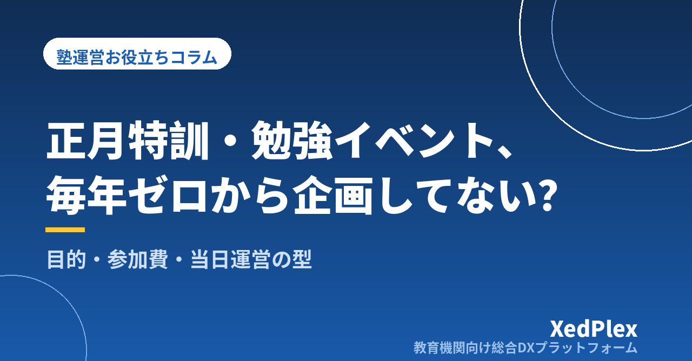

塾の正月特訓・勉強イベント、どう企画して運営する？｜目的・参加費・当日の出欠管理と保護者連絡を型にする

冬期講習の準備が始まるこの時期、「今年は正月特訓をやってみようか」「受験生向けに自習マラソンを開きたい」と考える塾長も多いのではないでしょうか。ところが実際に動き出すと、案内文の作成、参加の取りまとめ、参加費の集金、当日の食事や休憩の段取り、帰りの安全確認と、細かな仕事が次々に出てきます。終わってみれば塾長ひとりがぐったりして、「来年はもういいかな」となってしまう──個人塾ではよくある話です。
勉強イベントが負担になる原因は、毎回ゼロから企画していることにあります。目的・対象・日程・費用・当日の流れを一度「型」にしておけば、翌年からは日付を入れ替えるだけで回せます。この記事では、正月特訓や自習マラソンのような勉強イベントを、個人塾でも無理なく続けるための企画と運営の段取りを整理します。
まず「何のためのイベントか」を1つに決める
イベントの目的があいまいだと、内容も案内もぶれて、準備に時間がかかります。個人塾の勉強イベントの目的は、おおむね次の3つに分けられます。
| 目的 | 主な対象 | イベントの例 |
|---|---|---|
| 受験直前の学習量の確保 | 中3・高3の受験生 | 正月特訓、入試直前の長時間自習 |
| 学習習慣・やる気のきっかけづくり | 小学生〜中1・中2 | 自習マラソン、計算・漢字の検定チャレンジ |
| 塾を知ってもらう機会 | 在塾生の友人、地域の家庭 | 友達同伴OKの勉強会、体験イベント |
1回のイベントに複数の目的を詰め込むと、たとえば「受験生の集中を守りたいのに、体験参加の小学生でにぎやかになる」といったことが起きます。1つのイベントにつき目的は1つと決め、対象学年もそれに合わせて絞りましょう。外部生を招くイベントなら、終わったあとの案内まで含めて設計しておくと、体験授業から入塾への導線と同じ考え方で入塾につなげやすくなります。
日程・時間・参加費を先に決めて「案内文の骨組み」にする
決めておきたい7項目
案内を書き始める前に、次の7項目を1枚にまとめておきます。この表がそのまま案内文の骨組みになり、翌年の見直しの土台にもなります。
| 項目 | 決めること | 考え方のヒント |
|---|---|---|
| 日時 | 日付、開始・終了時刻、休憩時間 | 講習の日程と重ならないか、終了が遅くなりすぎないか |
| 対象・定員 | 学年、在塾生のみか外部生も可か、上限人数 | 席数と見守れる大人の人数から上限を決める |
| 内容 | 演習・自習・確認テストの配分 | 「何時間やったか」より「何を終わらせるか」を示す |
| 参加費 | 無料か有料か、金額、教材費の有無 | 月謝・講習費と分けて請求できる形にする |
| 持ち物・食事 | 教材、昼食・軽食の扱い | 原則は各自持参。塾で用意する場合はアレルギー確認を必須に |
| 申込方法と締め切り | 申込の受け方、締め切り日、キャンセルの扱い | 締め切りは当日の準備に必要な日数から逆算する |
| 当日の連絡・帰宅 | 遅刻・欠席の連絡先、送迎や帰宅方法 | 終了時刻と帰宅方法は保護者に必ず伝える |
参加費は「月謝と分けて」扱う
有料にする場合、参加費をその場で現金で受け取ったり、講習費と合算したりすると、後から「誰が払ったか」が分からなくなりがちです。イベント参加費は月謝とは別の項目として、翌月の請求にまとめて載せる形にしておくと、集金の手間と未収の確認がぐっと楽になります。諸費用の分け方は教材費・模試代・講習費の請求管理、料金表全体の考え方は個人塾の料金体系の決め方も参考にしてください。
案内と申込の取りまとめを「一覧表」で回す
案内は、開催日の3〜4週間前に出し、締め切りの数日前にもう一度リマインドするのが目安です。正月特訓なら、冬期講習の案内と同時期に出しておくと、家庭が年末年始の予定を立てやすくなります。季節講習の申込管理と同じ流れに乗せると、案内の手間が1回分減ります。
申込は、口頭や個別のメッセージでバラバラに受けると漏れが出ます。受け方を1つに決め、受け付けたらすぐ一覧表に転記しましょう。
- 一覧表の列：生徒名、学年、申込日、参加区分（全日・午前のみなど）、参加費、食事・アレルギーの申告、緊急連絡先の確認済みかどうか
- 締め切り後にやること：参加者数の確定、座席と時間割の決定、参加費を請求項目に登録、保護者へ「参加確定」の連絡
- キャンセルの扱い：何日前までなら参加費がかからないか、案内の時点で明記しておく
連絡を出しすぎると、かえって大事なお知らせが埋もれます。イベントの連絡は「案内」「リマインド」「参加確定」「終了報告」の4回程度に収めるのが目安です。連絡の量の考え方は塾の保護者連絡、適切な頻度は？で詳しく紹介しています。
当日の運営は「出欠・時間割・安全」の3点を固める
出欠と在室の確認
長時間のイベントでは、途中で抜ける生徒、遅れて来る生徒、早く帰る生徒が出ます。開始時刻を過ぎても来ない生徒がいたら、一定時間内に保護者へ連絡する、というルールを先に決めておきましょう。来た時刻・帰った時刻を記録し、保護者にも分かる形にしておくと、「まだ塾にいますか」という問い合わせへの対応も減ります。入退室の記録と保護者への通知の考え方は小さな塾でもできる入退室管理をご覧ください。
時間割は「区切り」と「達成の確認」を入れる
「朝から夕方まで自習」だけでは、集中が続かない生徒も出ます。50〜60分ごとに区切り、各ブロックの最後に短い確認テストや進み具合のチェックを入れると、生徒自身が達成を実感しやすくなります。終了時に「今日終わらせた範囲」を書き出させておけば、そのまま保護者への終了報告の材料にもなります。やる気を支える仕組みは生徒のやる気を維持する仕組みも参考にしてください。
9:00 開始・今日の目標を記入 ／ 9:10〜12:00 演習ブロック×3（各ブロック末に確認） ／ 12:00〜12:45 昼食・休憩 ／ 12:45〜16:30 演習ブロック×3＋弱点の質問タイム ／ 16:30 振り返りシート記入 ／ 17:00 終了・帰宅確認
安全と体調への備え
年末年始や冬休みは、日没が早く、気温も下がります。終了時刻と帰宅方法、体調不良時の連絡先は事前に保護者と共有しておきましょう。食事を塾で用意する場合は、アレルギーの申告を申込時に必ず受け、不明な場合は提供しない、と決めておくと安心です。当日の急な体調不良への対応は生徒が体調不良・けがをしたときの対応手順、夜の帰宅の安全は塾の防犯対策で整理しています。講師に協力してもらう場合の勤務時間や手当の扱いは、塾の規程に沿って事前に決め、迷う点は社会保険労務士などの専門家に確認してください。
終わったら「振り返り」と「来年用の型」を残す
イベントが終わった直後がいちばん記憶が鮮明です。翌日までに次の3つを済ませておくと、来年の準備が大きく楽になります。
- 保護者への終了報告：参加へのお礼、当日の様子、今日終わらせた範囲、今後の学習の見通しを短く伝える。写真を添える場合は、掲載の同意を得た生徒に限る
- 生徒ごとの記録：取り組んだ内容、つまずいた単元、本人の様子を残し、次の授業や面談に活かす
- 運営メモ：参加人数、申込から確定までにかかった日数、当日困ったこと、変えたいことを箇条書きで残す
最初に作った「7項目の表」と案内文、時間割、運営メモをひとつのフォルダにまとめておけば、それが翌年の企画書になります。開催時期は塾の年間事務カレンダーに書き込み、「いつ案内を出すか」まで決めておきましょう。受験生向けの特訓なら、その後の入試直前期の運営にもスムーズにつながります。
まとめ：勉強イベントは「型」があれば毎年続けられる
正月特訓や自習マラソンは、生徒にとっては学習量とやる気のきっかけになり、保護者にとっては塾の取り組みが見える機会になります。ただし、毎回ゼロから企画すると塾長の負担が大きく、続きません。目的を1つに絞る、7項目の表で骨組みを決める、参加費は月謝と分けて請求する、申込は一覧表で取りまとめる、当日は出欠・時間割・安全の3点を固める、終わったら来年用の型を残す。この流れを一度作っておけば、2回目からは準備の時間がぐっと短くなります。
まずは今年の冬、小さな規模でも1回開いてみて、その記録を来年の自分への引き継ぎとして残すところから始めてみてください。
この記事を書いた運営より
私たちは、個人経営・小規模の学習塾向けに、生徒管理・QRコードでの入退室記録・月次請求・保護者へのLINE/メール通知・AIによる学習支援までをひとつにまとめた教育機関向け総合DXプラットフォーム「XedPlex（ゼドプレックス）」を開発・提供しています。初期費用は0円、料金は生徒1名あたり月額300円（税込）から。生徒50名の塾なら月15,000円（税込）です。全国8つの教室で導入されており、導入塾には紹介ホームページの無料作成も行っています。機能の詳細説明はこちら。
XedPlexの詳細を見る